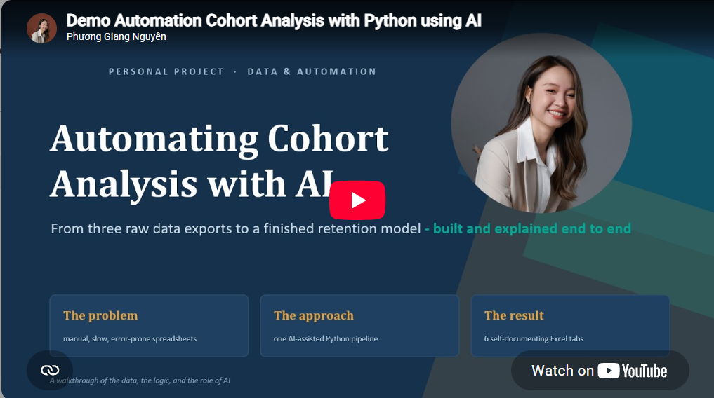

Accounting Automation · Python · AI
Automating Bank Reconciliation with AI
A Python tool I built with Claude Code to automate bank reconciliation, match transactions and highlight the exceptions that actually need review.
03 · Evelyn's portfolio
Tools I build with Python and AI to take repetitive work out of accounting and FP&A, so more time goes to judgement.
Accounting Automation · Python · AI
A Python tool I built with Claude Code to automate bank reconciliation, match transactions and highlight the exceptions that actually need review.

FP&A Automation · Cohort Analysis · Python · AI
A Python-based cohort analysis I built with AI assistance to turn three separate data exports into one repeatable retention model, covering customer retention, revenue retention, churn and product performance.
Questions about my work? Get in touch.